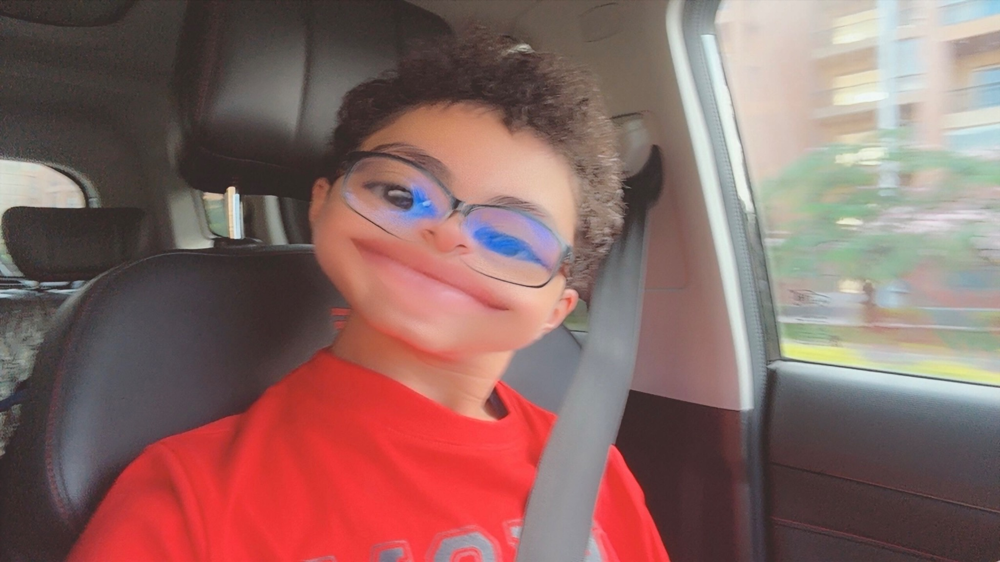

About the project
CrushAlerts is designed to help users receive notifications about new activity in one selected TikTok Business Messaging conversation, using supported TikTok authorisation and messaging capabilities.
The app is intentionally focused: one selected conversation, with notifications delivered through Apple Push Notifications when supported event data is received.
Developer

Yassin Safwat Awad
Creator and developer of CrushAlerts and 心动科技 (Xīndòng Kējì).
Important links
Privacy Policy · Terms of Service · Support · Disconnect & Reset